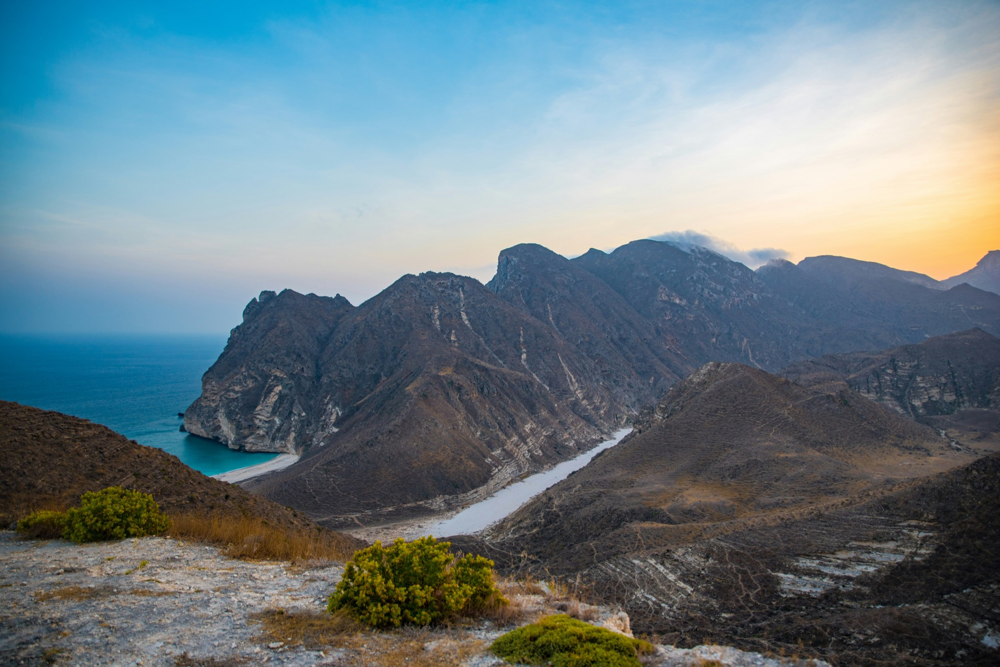

Visa pour Oman : ce qu'il faut savoir avant de partir
Entrée gratuite de 14 jours, eVisa touristique pour les séjours plus longs et contrôles à l'arrivée.

Les conditions d'entrée à Oman évoluent de temps en temps. Cette page résume ce que disent les sources officielles au moment de la rédaction. Vérifiez toujours les règles en vigueur sur le portail officiel ou dans les conseils aux voyageurs de votre pays avant de réserver.
Séjours de 14 jours maximum
De nombreuses nationalités peuvent séjourner à Oman jusqu'à 14 jours sans payer de visa. Pour les ressortissants français, le ministère des Affaires étrangères indique qu'un visa est requis mais qu'il est délivré gratuitement à l'arrivée pour les séjours de 14 jours ou moins. Les conseils du gouvernement britannique précisent que les citoyens britanniques munis d'un passeport britannique complet peuvent séjourner jusqu'à 14 jours sans visa. Les autres nationalités de l'Union européenne sont en général dans la même situation, mais vérifiez les règles applicables à votre passeport.
Séjours de plus de 14 jours
Pour un séjour plus long, il faut demander un visa touristique. Le portail officiel est le site eVisa de la Royal Oman Police (evisa.rop.gov.om). Les types de visa, les durées et les tarifs varient selon la nationalité, et le portail affiche les détails au moment de la demande. Le ministère français des Affaires étrangères mentionne un visa de tourisme à entrée unique valable 30 jours et un visa de visite à entrées multiples valable un an, pour des séjours d'un mois maximum à chaque passage.
Passeport et contrôles à l'arrivée
- Votre passeport doit être valable encore au moins six mois. Par prudence, assurez-vous qu'il le reste six mois après votre date de départ
- À la frontière, on peut vous demander un billet retour ou de continuation, un justificatif d'hébergement et une assurance maladie de voyage
- Dépasser la durée de séjour autorisée peut entraîner des amendes et d'autres sanctions : gardez un œil sur les dates de votre visa
Comment Wadi Escape vous aide
Les frais de visa sont facturés séparément de nos circuits. Une fois votre voyage réservé, nous vous envoyons les démarches exactes selon votre nationalité, et nous confirmons toujours avec vous les règles en vigueur avant votre départ.
Sources officielles
Réponses rapides
Faut-il un visa pour visiter Oman ?
De nombreuses nationalités, dont les Français et les Britanniques, peuvent séjourner jusqu'à 14 jours sans payer de visa, délivré gratuitement à l'arrivée ou dispensé selon le passeport. Un séjour plus long nécessite un visa touristique, demandé en ligne sur le portail eVisa de la Royal Oman Police.
Combien de temps mon passeport doit-il être valable pour Oman ?
Au moins six mois. Par prudence, assurez-vous qu'il est valable six mois après votre date de départ.
Guides associés
Prêt à préparer votre voyage à Oman ?
Dites-nous ce que vous avez en tête, nous nous occupons des détails.
Demandez votre devis gratuit →